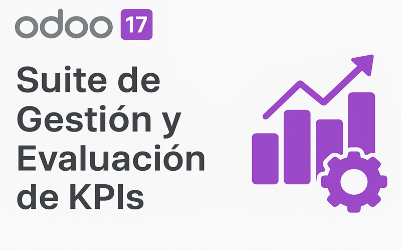

Este módulo ofrece una solución completa para departamentos de RRHH y Gerencia que necesitan monitorear la productividad en tiempo real.
Visualiza el rendimiento de toda la empresa en una sola pantalla responsiva.

Sistema de puntuación simplificado con guía visual integrada para asegurar calificaciones objetivas y justas.
Monitorea el avance de cursos y certificaciones para asegurar el crecimiento profesional de tu equipo.